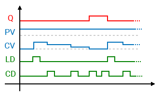

CTD_UDINT
Inputs & Sensors
Intermediate
FunctionBlock
v1.0.0
FBD Diagram

ctdscheme.png
ctd48.png (Icon)
Description
(Same as CTD but with PV and CV of UDINT data type)
The CTD_UDINT block counts down for each FALSE-to-TRUE transition of the input CD and sets the output Q when the accumulated value (CV) reaches the 0 value.

- rising edge of LD set CV to the value of PV
- rising edge of CD decrements CV by 1
- when CV reaches 0 the output Q is set
- once CV is 0 its value remains 0 until a rising edge of LD
Inputs (3)
| Name | Type | Init | Description |
|---|---|---|---|
| CD | BOOL | Count-down on input rising edge | |
| LD | BOOL | Preset counter input | |
| PV | UDINT | Preset value |
Outputs (2)
| Name | Type | Description |
|---|---|---|
| Q | BOOL | Count-down output |
| CV | UDINT | Counter current value |
Local Variables (2)
| Name | Type | Description |
|---|---|---|
| CDEDGE | BOOL | |
| MEMCD | BOOL |
Source Code (IL)
(* Check for reset input *)
LD LD
JMPCN l0
LD PV
ST CV
LD FALSE
ST MEMCD
JMP l1
(* Check for increment enable *)
l0:
LD CD
ANDN MEMCD
ST CDEDGE
LD CD
ST MEMCD
LD CDEDGE
AND( CV
GT 0
)
JMPCN l1
LD CV
SUB 1
ST CV
l1:
(* Counter output *)
LD CV
LE 0
ST Q